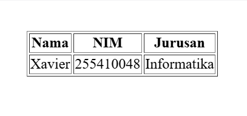

Oleh: Xavier Christian Rihi | Kategori: HTML Dasar
Untuk menampilkan data dalam bentuk baris dan kolom, HTML menyediakan tag <table>. Di dalamnya terdapat tag <tr> (table row), <td> (table data), dan <th> (table header) untuk menyusun isi tabel.

Berikut adalah contoh sederhana penggunaan tag tabel untuk menampilkan data mahasiswa.
<table border="1">
<tr>
<th>Nama</th>
<th>NIM</th>
<th>Jurusan</th>
</tr>
<tr>
<td>Xavier</td>
<td>255410048</td>
<td>Informatika</td>
</tr>
</table>
Dengan memahami penggunaan tag tabel, kita dapat menyajikan data secara terstruktur dan mudah dibaca. Tabel sering digunakan untuk menampilkan data akademik, laporan, dan informasi terorganisir lainnya dalam sebuah halaman web.